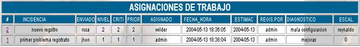
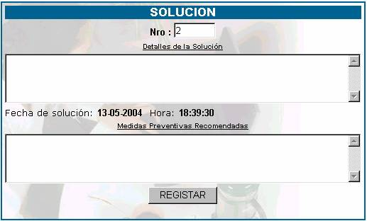

#
; indica el número de orden de mesa que le fue asignada. Si usted desea introducir la solución a su asignación, entonces haga click en el número de orden de mesa que le mostrará la siguiente pantalla.
En el primer espacio, introduzca los detalles de la solución al incidente ocasionado, como podrá ver, debajo de los detalles aparece especificada la fecha y la hora en el momento en que usted brinda una solución.
Introduzca las medidas preventivas que usted recomienda para que el incidente no se vuelva a repetir.
Luego haga click en el botón REGISTRAR no presione este botón si no está seguro de los datos que introdujo.
Problemas
Usted puede tener problemas de registro de solución, si es que usted quiere darle 2 soluciones a un incidente, le aparecerá un mensaje de error "
YA SE ASIGNO A ESTA ORDEN DE TRABAJO ", que especifica que la orden de trabajo ya tiene una solución registrada.Incidencia; especifica la descripción de la incidencia a la cual se le tiene que dar solución. Se denomina incidencia , a todas las consultas de los clientes sin aclarar, la naturaleza de las mismas, pueden ser: reclamos, denuncias, dudas operativas, técnicas, de normatividad, aplicación, obtención de información, desarrollo, etc.
Enviado por; especifica el nombre de la persona que envió la orden de trabajo.
Nivel; como resultado de la evaluación de la consulta del cliente se debe definir el nivel correspondiente. Los niveles especificados son Nivel 1, Nivel 2 y Nivel 3.
1à Cuando se puede atender una consulta y resolverla sin requerir de la participación de especialistas en áreas específicas.
2à Cuando la solución excede las posibilidades del coordinador de la mesa de ayuda o existen políticas internas por las que no corresponde que éste de directamente la solución, se asigna la incidencia a un especialista interno de otro sector. Las áreas de 2do nivel son de soporte a usuarios y soporte técnico de PCs, así como de operación de LAN, WAN. Se incluyen las, Unidades Internas.
3à Es cuando la realización de actividades requieren un alto nivel de sofisticación de la tecnología con una alta especialización para resolverlo.
Criti; describe la criticidad, esta será propuesta por el usuario o técnico y confirmado por el especialista, de acuerdo al siguiente puntaje:
1à Altamente critico
2àMedianamente critico
3àPoco o no critico
Criticidad alta.
Comprenderán las solicitudes de impacto a nivel de la institución.Criticidad media. Cuando el impacto sólo es a nivel de la institución.
Criticidad baja. Cuando representa una mejora pero no altera el servicio o proceso afectado.
Prior ;describe la prioridad que será asignada por el especialista y comunicado al usuario donde:
1 àalta
2 àmedia
3 àbaja
Asignado; nos muestra el nombre de la persona a la cual le fué asignada la orden de trabajo, teniendo en cuenta el nivel, la criticidad y la prioridad establecidas.
Fecha y Hora; como su nombre lo dice nos muestra la fecha y la hora en la que fue asignada la orden de trabajo.
Estima; es la fecha aproximada de solución.
Reg. Por; indica el Nombre del Coordinador de la Mesa de Ayuda, quien es el que registra la orden.
Diagnóstico; en esta parte se visualiza las características del problema.
Escal; Indica el nombre de la persona hacia la cual fue realizada el escalamiento.